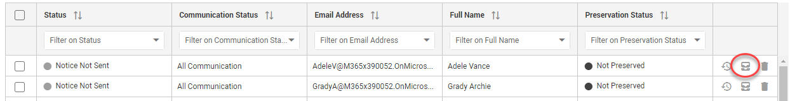

| A custodian is a natural person or a representative of an entity who may hold data relevant to the anticipated litigation. Usually these people are identifiable through their direct employment with the company that is awaiting litigation. At other times identifying these custodians can be difficult, because not all custodians are a direct party to the litigation. A custodian can be a third-party to the litigation, and having the third-party custodian safekeep relevant data is the responsibility of the litigative party. When anticipating litigation, one is not required nor expected to 'preserve every shred of paper, every e-mail or electronic document, [or] every backup tape.' What parties are required to preserve is 'unique, relevant evidence that might be useful to an adversary' or 'is reasonably likely to be requested during discovery.' |
Custodians are contacts that have been added to a hold. Custodians receive messages (the first message is a Hold Notice) which they are required to accept. For more information, please view the Quick Start Video Hold Acceptance.
Keep track of custodian statuses and perform actions in the Custodians Tab of a hold.
The custodian status (shown in the Status column) determines which actions are available.
For example, a custodian that is still pending acceptance, can be sent a message or assigned a questionnaire. You can also lift his or her hold, escalate, accept on their behalf or refresh to get the latest status information.
Please note, that for silent custodians (Communication Status), you can only lift the hold, accept on their behalf or refresh. As silent custodians do not receive any communications, all other actions are disabled.
When custodians have accepted the hold, you cannot escalate or accept on their behalf anymore. You can however still send a message, for example, an awareness message, reminding them of still being placed on a hold.
Click to view full screen image:
View added custodians and filter/sort them via the columns.
|
|
Note: Filtering/sorting works the same on all pages. |
View a short animation of filtering and sorting on this page: Holds Management & Create a Hold.
To add/remove columns, select the Settings icon 
Then, select Columns and (de)select the appropriate columns.

Edit custodians in the Address Book.
Delete a single custodian via the
Delete Custodian icon

Delete multiple custodians by selecting them and clicking the
Delete selected Custodians icon 
| Once a Hold has been issued, you cannot delete custodians anymore. |
View, per Custodian, the preservation locations. Select the View Custodian Preservation Locations icon  to open the Preservation tab showing all locations that are or should be preserved for that specific custodian.
to open the Preservation tab showing all locations that are or should be preserved for that specific custodian.

View, per Custodian, the audit information. Select the View Custodian Activity icon  to open the Audit page showing the Event Details and Properties of that specific custodian.
to open the Audit page showing the Event Details and Properties of that specific custodian.

The communication status determines whether only the Hold Notice and Lift Notice will be sent (Notice Only), or all messages (All Communication). A silent communication status means that the custodian will not be notified of the hold.
Select one or more custodians and select the Set Communication Status icon
Next, select All Communication, Notice Only or Silent.
Export all your custodians in a CSV, Excel or PDF file.
First, select the Settings icon
Then, select Export As... and select the format to which you want to export.
The Custodians View might have been adjusted by filtering, sorting and/or by a specific selection of columns (via Settings > Columns).
To save this new view, select the Settings icon
Then, select Save View.
Once Hold Notices are sent to custodians, a number of actions are available.

Even when a hold has been issued, you can still add custodians.
This is a manually generated follow up message. You can send a custom message or select one of the predefined messages (define those in the Message Templates section).
Select the Send a message icon 
Next, select the message you want to send.
Set up an automated messaging scheme in the Scheduling tab.
This option is only available when Questionnaire Templates have been created.
Select the Assign a Questionnaire icon
Next, select the Questionnaire you want to assign.
The hold will be lifted, but only for the selected custodians.
Select the Lift Hold for selected Custodians icon 
When the custodian has not responded to any of the messages sent to him and the acceptance time frame has passed, you can escalate.
Select the Escalate icon 
A hold can be accepted on behalf of selected custodians that are sick, on holiday or otherwise unable to respond within the specified time frame.
Select the Accept on behalf of selected custodians icon 
When working on the Custodians tab for some time, you might want to refresh the page and see, for example, if the status of a custodian has changed.
Select the Refresh icon
No additional actions can be performed on the custodians in a lifted hold.